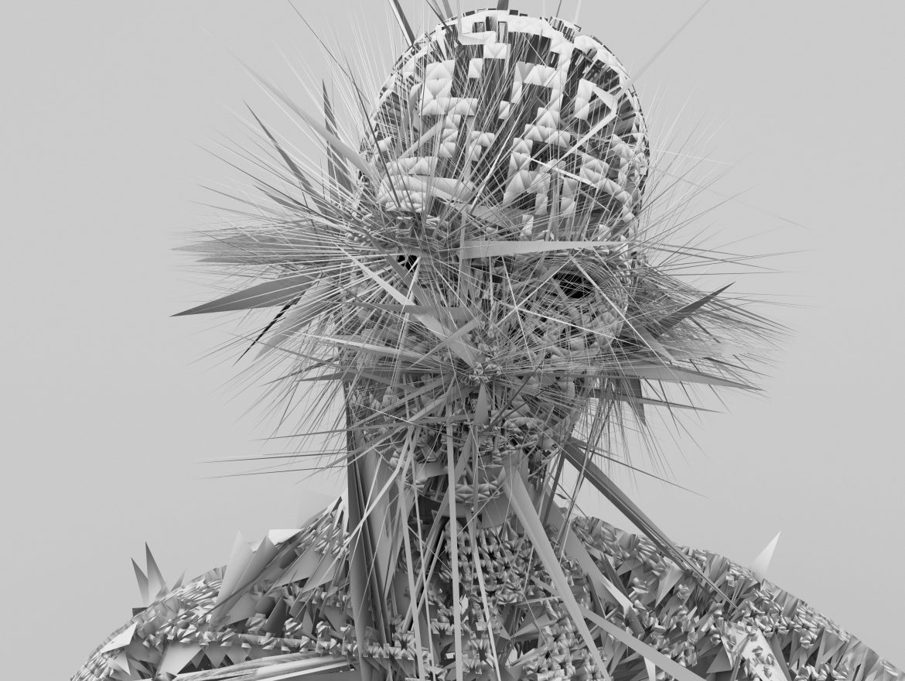
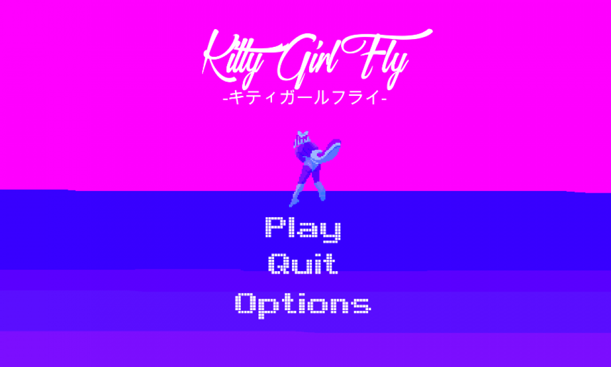
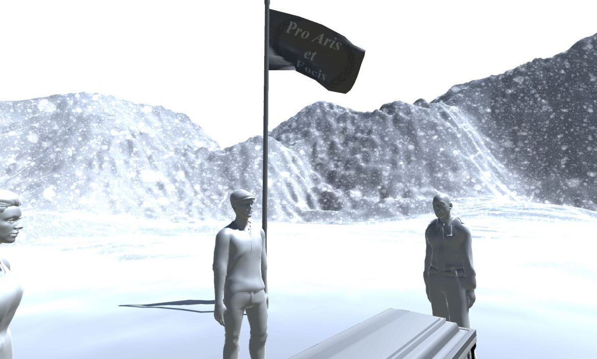
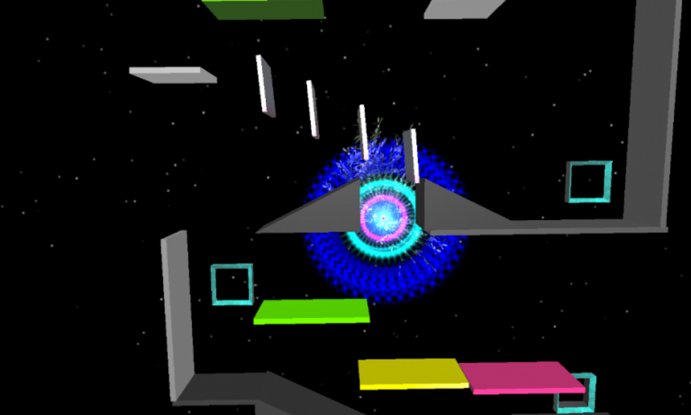
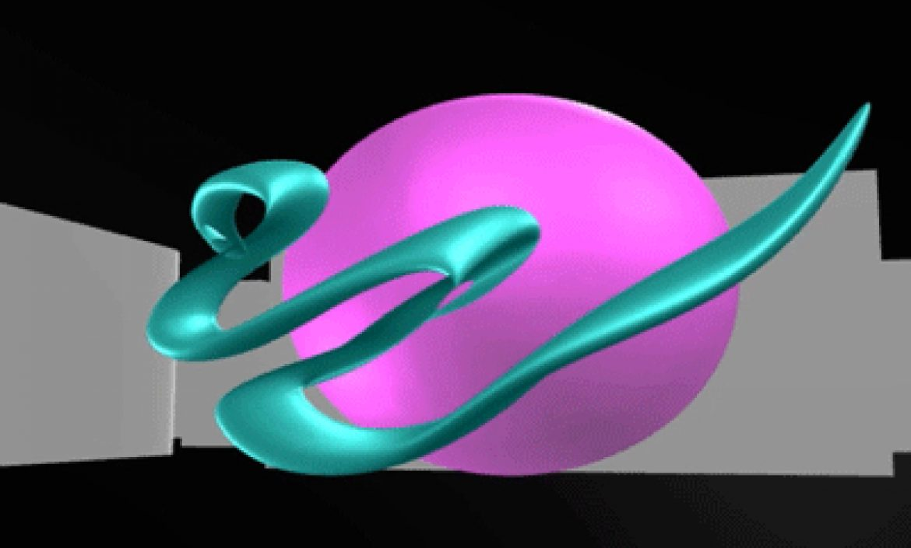
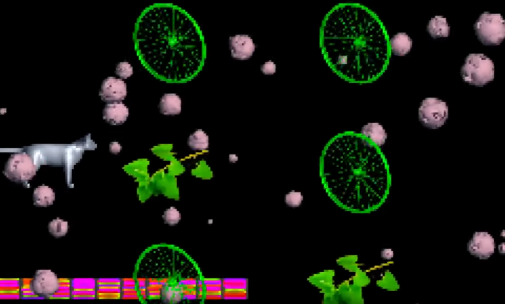
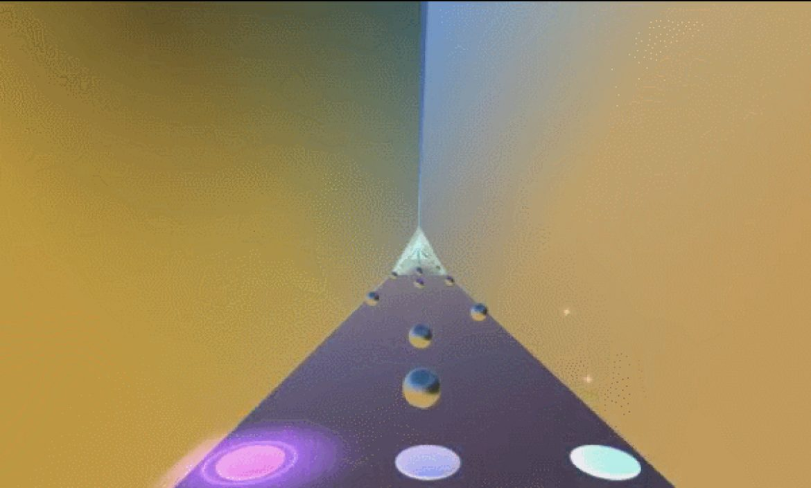
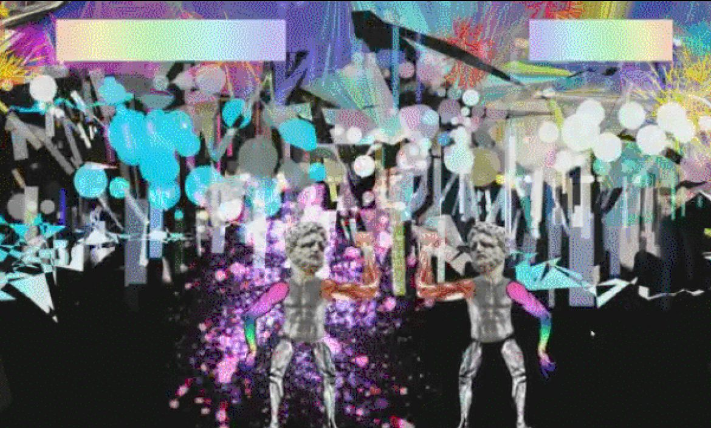
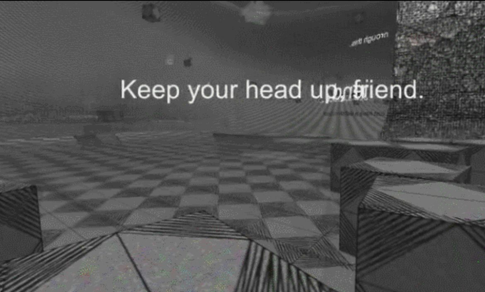

GAMES
Interference (2018)
Winner of the 2018 LSU Global Game Jam

Scan an abandoned research facility for crucial information while being attacked by an onslaught of cybernetic interlopers. Beware though, their cybernetic shielding can acclimate to your weapons.
Learn moreMuseum of Virtual Art II (2017)
Multiplayer, interactive gallery featuring the artists from New Aesthetic. Featured image by Elena Romenkova.
Learn moreKitty Girl Fly (2017)
Kitty Girl Fly features space-bending graphics as you navigate your character through wave after wave of monsters shooting deadly balls of energy.
Learn morePress F to Pay Respects (2017)
This is an experience about honoring God and Country.
Learn moreQuavers (2017)
It is the beginning of time. The universe exists as one infinitesimally small point, manifested as a platforming puzzle. During this fraction of a nanosecond, sound waves have an incredible effect on the nature of reality. Using the power of music, you must help guide a colony of quavers to their ascension, planting the seeds of intelligent life in the universe.
Learn moreMuseum of Virtual Art (2016)
A digital museum featuring artists from New Aesthetic.
Learn moreStrung Out in Heaven's High (2016)
Do you remember a cat that’s been in such an early game? We know that the cat was sent to space. Connected, monitorized, trapped in a tin can. A cat sent to die for the sake of science. High on catnip his brain envisioned adventures of space discovery, intergalactic battles, heroes and glory.
Learn moreCalm (2016)
Based on the theme “Ritual.” Calm is a meditative ceremony that is performed to induce a state of zen.
Learn moreColosseum Stellarum (2016)
Two player fighting game where the victor becomes the Celestial Champion and fights for the gods.
Learn moreDepression Simulator (2016)
Depression Simulator is an interactive experience made to abstract the mindset of depression. Depression Simulator was created in one night, and is meant to convey our feelings and experiences. Void of story and direction, explore an unfamiliar dimension and discover the reality of the world around you.
Learn more